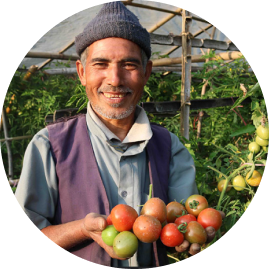

Empowering Farmers with AI-Driven Insights
Halo AI provides cutting-edge solutions to optimize crop
yields, reduce costs, and promote sustainable farming
practices.
Welcome to Halo AI
At Halo AI, we are dedicated to transforming the agricultural
landscape through the power of artificial intelligence. Our
platform offers a suite of tools designed to help farmers make
informed decisions, improve efficiency, and achieve greater
success. Whether you're managing a small family farm or a
large-scale operation, Halo AI provides the insights you need to
thrive in today's dynamic market.
"म Halo AI बाट विज्ञसँग सजिलै सम्पर्क गर्न सकें।
उहाँको सल्लाहले मलाई बाली मिलाउने निर्णयमा धेरै मद्दत
गर्यो।"
(I was able to easily contact an expert through Halo AI. Their advice helped me make better crop-matching decisions.)
(I was able to easily contact an expert through Halo AI. Their advice helped me make better crop-matching decisions.)

Ram Bahadur – Chitwan
"पहिले मल कस्तो हाल्ने भन्नेमा अन्योल हुन्थ्यो। Halo
AI प्रयोग गरेपछि म सटीक बाली छान्न सकें र उत्पादन २५%
बढ्यो।"
(I used to be confused about what fertilizers to use. After using Halo AI, I could choose the right crop, and my yield increased by 25%.)
(I used to be confused about what fertilizers to use. After using Halo AI, I could choose the right crop, and my yield increased by 25%.)
Kiran Thapa – Dang
"यो प्रविधिले मलाई मौसम र माटो अनुसार बालीको सल्लाह
दियो। अब बेमौसमी क्षतीबाट जोगिन सकेको छु।"
(This technology gave me crop suggestions based on weather and soil. Now I can avoid off-season losses.)
(This technology gave me crop suggestions based on weather and soil. Now I can avoid off-season losses.)